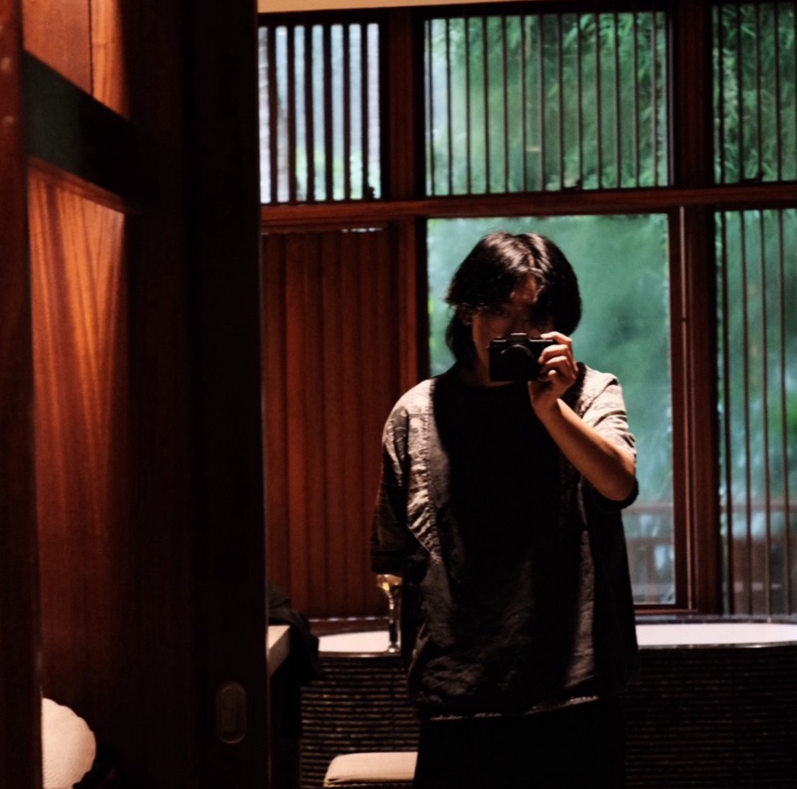

1 Tentang Saya

1.1 Semester 7, Pukul 3 Pagi, dan Satu Pertanyaan
Ini adalah minggu ketiga semester 7. Saya baru saja selesai debugging kode yang tidak jalan selama 2 jam—ternyata hanya karena typo. Sambil menatap layar laptop, saya bertanya pada diri sendiri: “Kenapa saya ada di sini?”
Bukan dalam konteks filosofis yang mendalam. Maksud saya, kenapa saya memilih Sistem dan Teknologi Informasi? Kenapa saya menghabiskan Jumat malam untuk memikirkan sequence diagram? Kenapa saya merasa lebih nyaman dengan UML daripada dengan orang?
Dan kemudian saya menyadari: mungkin justru karena pertanyaan-pertanyaan ini, saya ada di sini.
1.2 Siapa Saya?
Nama saya Jonathan Wiguna. Saya mahasiswa semester 7 Sistem dan Teknologi Informasi di Institut Teknologi Bandung, lahir di Indonesia tahun 2004.
Kalau ditanya “apa passion kamu?”, saya tidak punya jawaban dramatis. Saya tidak bangun pagi dengan excited ingin coding. Saya tidak memimpikan menjadi next Steve Jobs. Tapi ada satu hal yang konsisten: saya merasa tenang ketika berhasil memetakan sesuatu yang chaos menjadi struktur yang masuk akal.
Itulah kenapa saya tertarik dengan System Analysis. Bukan karena saya jenius memahami teknologi, tapi karena saya menikmati proses memecah kompleksitas menjadi bagian-bagian yang bisa dipahami.
UML diagrams, flowcharts, system requirements—bagi saya, itu bukan tugas yang membosankan. Itu adalah cara saya memahami bagaimana sesuatu bekerja.
1.3 Bagaimana Saya Sampai di Sini?
Awalnya, saya memilih jurusan ini karena alasan yang pragmatis: kerja remote, fleksibilitas, prospek karir yang lumayan. Bukan karena cinta pada teknologi, tapi karena saya ingin kebebasan.
Tapi setelah 3.5 tahun, saya menyadari bahwa kebebasan tanpa arah itu sama frustrasinya dengan terjebak di jalur yang salah. Dan di situlah saya sekarang—masih mencari arah, tapi setidaknya sudah tahu apa yang saya nikmati.
Di era AI seperti sekarang, saya juga mulai mengeksplorasi bagaimana teknologi AI bisa diintegrasikan dalam analisis sistem dan automasi proses bisnis. Masih banyak yang perlu dipelajari, tapi setidaknya ada sesuatu yang membuat saya penasaran.
1.4 Kepribadian: Introvert yang Overthinking
Saya adalah tipe orang yang introverted dan detail-oriented sampai ke level yang kadang tidak produktif. Contoh: saya bisa menghabiskan 30 menit memilih font untuk presentasi. Apakah itu penting? Tidak. Apakah saya akan tetap melakukannya? Ya.
Social interaction bagi saya seperti sprint—saya bisa melakukannya, tapi saya tidak bisa lari marathon. Saya butuh waktu sendiri untuk recharge. Dan itu bukan karena saya benci orang, tapi karena otak saya butuh quiet time untuk process.
Saya juga overthinker yang self-aware. Artinya, saya tahu saya overthink, saya tahu itu tidak produktif, tapi saya tetap melakukannya. Setidaknya kesadaran ini membantu saya manage—kadang.
Dan ya, saya tahu ini semua terdengar seperti excuse untuk being socially awkward. Tapi daripada pura-pura extroverted, lebih baik jujur tentang siapa saya.
1.5 Apa yang Saya Bisa Tawarkan?
Saya tidak bilang saya jenius. Saya tidak bilang saya expert. Tapi ada beberapa hal yang saya cukup kompeten lakukan:
1.5.1 1. Logical Reasoning
Saya bisa memecah masalah kompleks menjadi bagian-bagian yang bisa diproses. Ketika orang lain overwhelmed dengan banyak informasi, saya bisa melihat pola.
1.5.2 2. Technical Documentation
Saya bisa menjelaskan konsep teknis dengan cara yang (relatif) mudah dipahami. UML, flowchart, requirements document—ini adalah bahasa kedua saya.
1.5.3 3. Learning New Systems Quickly
Saya bukan expert di satu hal, tapi saya cepat adaptasi ke tool atau framework baru. Jack of all trades, master of none—tapi kadang itu yang dibutuhkan.
1.5.4 4. Spotting Gaps
Saya bisa lihat inconsistency, potential problem, dan missing pieces dalam sebuah sistem. Bukan karena saya pesimis, tapi karena otak saya wired untuk notice itu.
1.6 Apa yang Masih Saya Cari?
Jujur? Saya masih tidak 100% yakin dengan arah karir saya.
Apakah saya ingin jadi System Analyst? Mungkin. Apakah saya ingin kerja di corporate? Mungkin tidak. Apakah saya tahu apa alternatifnya? Juga tidak.
Tapi saya belajar bahwa tidak apa-apa untuk tidak tahu. Yang penting adalah jangan berhenti bergerak hanya karena tidak yakin ke mana.
Semester 7 ini terasa seperti liminal space—bukan lagi junior, belum benar-benar senior, dan deadline skripsi sudah mulai terlihat di horizon. Tapi alih-alih panik, saya mencoba menerima bahwa uncertainty itu bagian dari proses.
1.7 Penutup: Work in Progress
Kalau ada satu hal yang ingin saya sampaikan dari “All About Me” ini, itu adalah: saya masih dalam proses memahami siapa saya.
Saya bukan orang yang punya semua jawaban. Saya bukan orang yang punya passion yang jelas sejak awal. Saya hanya seseorang yang mencoba memahami dunia—satu diagram, satu sistem, satu pertanyaan pada satu waktu.
Dan mungkin, itu sudah cukup untuk sekarang.
“The secret of happiness is to see all the marvels of the world, and never to forget the drops of oil on the spoon.”
— Paulo Coelho, The Alchemist